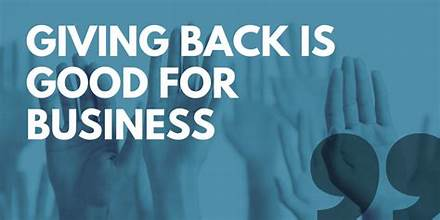
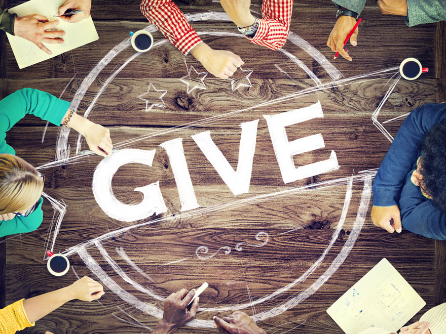
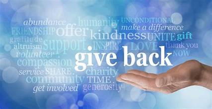
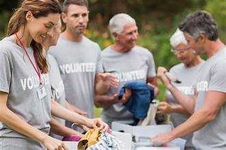

GIVE BACK:
Giving back is a powerful and noble act that enriches both individuals and communities. It involves contributing time, resources, or efforts to support others and create a positive impact. This act of generosity is a fundamental part of our social fabric, underpinning the values of empathy, compassion, and solidarity.

Whether it's volunteering at a local charity, making donations to a cause close to your heart, or simply offering a helping hand to someone in need, giving back carries immense significance. It not only improves the lives of those who receive assistance but also uplifts the spirits of the givers, fostering a sense of purpose and fulfillment.

Moreover, giving back has a ripple effect. Acts of kindness and philanthropy inspire others to do the same, creating a cycle of goodwill and community support. It can build stronger bonds among individuals and reinforce the belief that small actions, when multiplied, can bring about significant positive change.

In essence, giving back is a testament to the capacity of human beings to make the world a better place. It's a reminder that we are not alone in this journey of life and that together, through our collective efforts, we can create a more compassionate, equitable, and harmonious society.

Beyond its immediate impact on individuals and communities, giving back has far-reaching benefits for society as a whole. It contributes to the development of a more empathetic and interconnected world. When individuals and organizations engage in acts of generosity, it fosters a sense of unity and shared responsibility. This sense of togetherness can lead to greater social cohesion and collaboration, which are crucial in addressing complex global challenges, from poverty and inequality to environmental sustainability.
Moreover, giving back can be a powerful force for personal growth. It teaches important values such as gratitude, humility, and the joy of making a positive difference in the lives of others. It encourages a deeper understanding of the needs of our fellow humans and prompts reflection on the blessings and opportunities we often take for granted. In essence, giving back is a win-win endeavor, as it not only strengthens communities and contributes to societal well-being but also enhances the character and fulfillment of those who choose to partake in acts of kindness and philanthropy.
